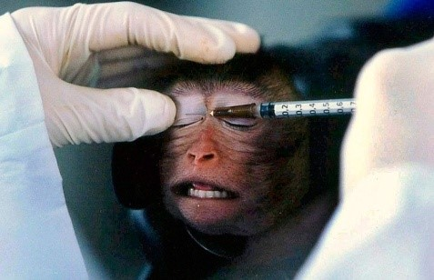

Ambitos de la Experimentacion
En la actualidad la experimentación animal sigue desempeñando un papel de primer orden en muchos ámbitos:
En agroalimentación: genes de interés agronómico, diseño de plantas transgénicas, etc.
En sanidad humana y animal: diagnóstico de enfermedades, obtención de vacunas, tratamiento de enfermedades, etc.
En biotecnología: sistemas biológicos de producción de proteínas, bioseguridad, etc.
En medio ambiente: detección de contaminantes, bioseguridad, etc.
En investigación genómica: análisis estructural y funcional de genomas, mapeo físico y genético de genomas, nuevas tecnologías para su análisis funcional, modelos animales de enfermedades humanas, etc.
Ecologistas: Una organización ecologista importante que ha apoyado firmemente la experimentación con animales es World Wildlife Federation (WWF). Este grupo ha estado presionando fuertemente en todo el mundo para que se hagan más experimentos con un gran número de animales para probar el impacto de diferentes productos químicos en el medio ambiente. Debido a estas actividades, WWF ha sido fuertemente criticad por organizaciones que defienden a los animales no humanos.
Lo que importa a las organizaciones ecologistas que defienden pruebas letales en los animales es la conservación de los ecosistemas, las especies y los intereses de los seres humanos. Dichos experimentos nunca se permitirían en los seres humanos debido a los daños que les causarían. Sin embargo, las principales razones por las que serían perjudiciales para los seres humanos son las mismas por las que serían perjudiciales para los animales no humanos: el gran dolor, angustia emocional y la muerte. Esta desconsideración con los animales no humanos es el especismo, las discriminación de quienes no pertenecen a una especie determinada.
Los animales sufren terriblemente en la naturaleza. Por desgracia, las pruebas químicas no están dirigidas a ayudar a los animales no humanos, sino impulsar los fines antes mencionados. Si los humanos estuviéramos preocupados por los intereses de los animales y el impacto de las pruebas en su hábitat, no les causaríamos sufrimiento y muerte con nuestros experimentos. En su lugar, investigaríamos formas de ayudarlos en el mundo salvaje.
Se les hacen pruebas como la de Pruebas de neurotoxicidad del desarrollo, WWF también ha presionado a los gobiernos de EEUU y Canadá para evaluar el “desarrollo neuro-toxico” de los plaguicidas y otras sustancias químicas, que suponen el uso de muchos más animales en procedimientos dañinos y mortales. Esto se añade a las pruebas actuales de plaguicidas, que ya matan a miles de animales al año.
Cosméticos y productos del hogar: La experimentación animal para la producción de cosméticos es uno de los campos en los que los animales son usados. Supone la muerte de millones de animales en diferentes países, animales que son perjudicados de manera muy diferentes en el proceso. Se usan conejos, cobayas, ratones y ratas de manera habitual para la experimentación animal. Son quemados, mutilados, envenenados y gaseados, y si consiguen sobrevivir al proceso, son matados para que sus cuerpos puedan ser estudiados o bien son sometidos al mismo tormento de nuevo.
¿Por qué ocurre esto? La experimentación animal para la producción de cosméticos ocurre principalmente porque miles de cosméticos y productos del hogar nuevo salen al mercado cada año. En muchos países, todos estos nuevos cosméticos son experimentados en animales. Algunas veces son experimentados los productos finales, y otras veces lo son los ingredientes individuales usados en ellos.
En la Unión Europea, la India y otros lugares, están prohibidos en la actualidad experimentar con animales para cosméticos y vender productos que han sido experimentados. Esto supone que, al menos en teoría, cada producto cosmético que se puede comprar no tendrá que haber sido experimentado en animales. Quienes no quieren apoyar la experimentación animal pueden, por lo tanto, comprar cosméticos en esos lugares sin tener que elegir una determinad marca.
Algunas de las pruebas que se realizan, son:
• Test Draize
El test Draize se usa para medir la toxicidad de una sustancia. Un animal es sujeto, y la sustancia a experimentar se aplica en la piel o el ojo del animal. Pueden usarse pinzas para dejar abiertos los ojos del animal. La sustancia puede ser dejada en la piel o el ojo hasta 14 días para observar sus efectos.
• Toxicidad aguda
En los experimentos de toxicidad agua, los animales son obligados a soportar la exposición repetida a químicos hasta tres meses. Esto puede hacerse para experimentar los efectos del químico en organismos como pulmones, hígado, corazón o sistema nervioso. Durante estas pruebas, los animales pueden ser obligados a ingerir el químico que está siendo probado, se les puede inyectar directamente, o bien el animal puede ser colocado en un tubo (como en el caso de los ratones, por ejemplo), y obligados a inhalar la sustancia.
Para la militar: En otros casos, los animales son dañados para entrenar a médicos en la curación de humanos. Algunos ejemplos son los siguientes:
El “laboratorio de heridas” es un experimento que consiste en colgar animales, en ocasiones conscientes, y dispararlos. Después los cirujanos militares los utilizan para sus prácticas. El New York Times publicó una historia en 2006 en la que se mencionaba que en uno de esos experimentos un cerdo fue disparado “dos veces en la cara con una pistola de 9 mm, luego seis veces con un AK-47, y luego dos veces con una escopeta calibre 12. Y finalmente se le prendió fuego”.
Otro caso supuso romper y amputar las patas de 990 cabras. Se describió de la siguiente manera: “El instructor Armand Fermin coloca una podadora sobre una articulación de la pata, la cierra, aplica presión, y resuena un ‘crac’ en la poco iluminada tienda de campaña en Fort Sam Houston”.
Biomédica: El uso de animales en investigación científica permite el desarrollo de modelos biológicos para estudiar y realizar experimentos bajo condiciones controladas de un gran número de situaciones o problemas de salud humana que de otra forma serían desde el punto de vista ético y nivel técnico imposibles de realizar, como el conocer la historia natural de infecciones, desarrollar tratamientos y nuevas técnicas quirúrgicas. La Investigación biomédica con animales de laboratorio de alta calidad microbiológica y genética, es necesaria para que los resultados sean confiables, reproducibles y de alto impacto para la comunidad científica.

Articulo 1
Objeto y finalidad.
1. El objeto del presente real decreto es establecer las normas aplicables para la protección de los animales utilizados, criados o suministrados con fines de experimentación y otros fines científicos, incluyendo la educación y docencia. Para ello, regula lo siguiente:
a. El reemplazo y reducción de la utilización de animales en procedimientos y el refinamiento de la cría, el alojamiento, los cuidados y la utilización de animales en tales procedimientos.
b. El origen, la cría, el marcado, los cuidados, el alojamiento y la eutanasia de los animales.
c. Las actividades de los criadores, suministradores o usuarios
d. La evaluación y autorización de proyectos en cuyos procedimientos se utilicen animales
2. Este real decreto tiene como finalidad asegurar dicha protección, y en particular que:
El número de animales utilizados en los procedimientos se reduzca al mínimo, aplicando en lo posible métodos alternativos;
b. no se les cause innecesariamente dolor, sufrimiento, angustia o daño duradero;
c. se evite toda duplicación inútil de procedimientos;
d. y que a los animales utilizados, criados o suministrados se les concedan los cuidados adecuados.